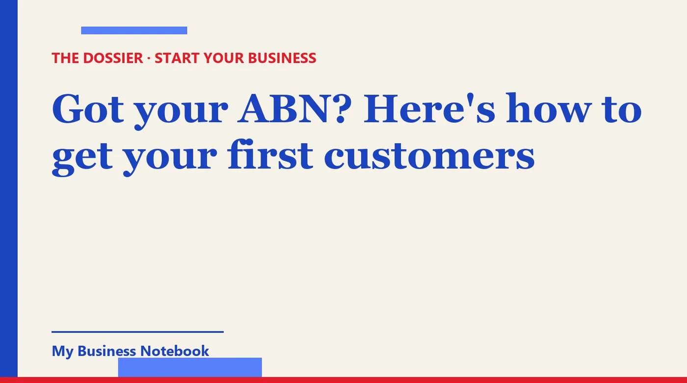

Got your ABN? Here's how to get your first customers
The ABR gave you your 11 digits, you've got a logo, maybe even a new ute. And nobody's rung. That's normal: an ABN makes you a business on paper, not in anyone's head. Here's how to get from ABN to your first paying customers, in the order that works, without breaking the Spam Act on the way.

The short answer
An ABN lets you invoice. It doesn't bring anyone to your door. To get your first customers, make sure people can check you out (ABN Lookup, a verified Google Business Profile, the same details everywhere), then go and ask for work: neighbours, local businesses, and a short list of companies you contact yourself.
Most new sole traders do this backwards. They print business cards, build a logo, and wait. This guide is about the first 60 days after the ABN lands, in the order that actually pays.
ABN apply online: what you get on day one
Applying for an ABN through the Australian Business Register (ABR) is free. business.gov.au says so plainly: "It's free to register for an ABN through the Australian Government's Australian Business Register." If a website wants a fee to lodge it for you, you're paying for a middleman.
If your online application goes through, the ABR says you get your 11-digit ABN immediately. If you get a reference number instead, the ABR aims to review it within 20 business days. Either way, you have to be running a business or other enterprise to be entitled to one.
Your ABN is already a public listing
Here's the part people miss. Once your ABN is issued, your details go onto the Australian Business Register, and anyone can search them on ABN Lookup. A property manager or a café owner who's about to hire you will often do exactly that.
So treat it as your first listing. Check that the name and location shown there match what you put on your quotes, your Google profile and your ute. If you have genuine privacy concerns as a sole trader, the ABR lets you request that certain details not be disclosed.
ABN business name registration: do you need one?
Only if you trade under a name that isn't your own. ASIC says you don't need to register a business name if you operate as a sole trader under your first name and surname. "Jess Taylor" is fine. "Jess Taylor Cleaning" or "Spotless Suburbs" needs registering.
You'll need an ABN (or an ABN application reference number) first, and there's a registration fee for one or three years. Check the current amount on ASIC's website before you pay, and use the official ASIC register rather than a lookalike site.
Is a business name worth it? For customer-facing trades, usually yes. "Spotless Suburbs" tells a stranger what you do. Your own name doesn't, at least not until people know you.
An ABN for Uber Eats is not a business plan
Plenty of people search "abn for uber eats" or "abn doordash", and that's a perfectly good reason to get one. The app finds the jobs, sets the price and brings the customer. You just turn up.
The moment you go out on your own (cleaning, gardening, handyman work, bookkeeping), nobody hands you jobs anymore. You become the app. The rest of this guide is about doing that job well: being findable, then going out and asking.
How do I get my business on Google Maps for free?
Create or claim your Google Business Profile. Google's own help centre says "you can add or claim your business at no charge", from business.google.com/add or by searching for your business in Google Maps and selecting "Claim this business".
- Search your business name first. A profile may already exist. Claim it rather than creating a duplicate.
- Use your real trading name. The one on ABN Lookup or your ASIC registration, with no extra keywords stuffed in.
- Pick the most specific category. "House cleaning service" beats "Service establishment".
- Verify it. Depending on your business, Google offers phone or SMS, email, a live video call or a postcard.
Allow some time. Google says verification reviews take up to five working days, and most postcard codes arrive within 14 days. Start the day your ABN comes through, not the week you're desperate for work.
We've covered the full set-up (photos, hours, Apple Maps, Bing) in a separate guide, so we won't repeat it here. The short version: a complete profile with real photos and a handful of honest reviews does more than a perfect logo.
How to get customers as a new business
Start with the people who already trust you, then widen the circle one suburb at a time. Your first ten customers rarely come from Google. They come from someone who knows you, or someone you asked directly.
The first ten: a simple order
- Tell your own circle, properly. One clear message: what you do, which suburbs you cover, how to book. Ask them to pass it on to one person.
- Do the first jobs brilliantly, then ask each happy customer for a Google review while the job is fresh.
- Ask for referrals on the spot. "Do you know anyone else in the street who might want this?" is a fair question after good work.
- Team up with complementary trades. A cleaner and a property manager, a gardener and a pool tech, a bookkeeper and a local accountant. They see your future customers every week.
How to get clients quickly
Contact them. Visibility builds slowly, while direct outreach can land a job this week. The trick is to keep the list small and the message personal.
- Pick one type of customer in one area. "Real estate agencies within 10 km" or "cafés on the main street" is a target. "Anyone who needs cleaning" is not.
- Build a list of 20 to 30 businesses that fit, with a real contact for each.
- Write four sentences, not four paragraphs. What you noticed about them, what you do, one proof point, one easy question.
- Follow up once or twice, a few days apart. A lot of replies come on the follow-up, not the first message.
- Walk in where it makes sense. For shops and offices on your own patch, a friendly visit with a simple flyer still works.
How to get cleaning clients (and other home services)
For cleaners, gardeners and handymen, the best early customers live close together. One regular client in a street often turns into three, because neighbours see your van and ask.
Work one or two suburbs hard rather than a whole city. Set your Google profile's service area to the suburbs you actually cover, drop a flyer in the letterboxes near your regular jobs, and answer local community groups when someone asks for a recommendation. For commercial cleaning, the direct outreach above is where the bigger, steadier contracts come from: offices, clinics, childcare centres, strata managers.
How to advertise my business locally without breaking the Spam Act
Email and SMS marketing in Australia fall under the Spam Act 2003, which the ACMA enforces. The basic rule on the ACMA's site: you must have consent before you send a marketing message, and every message must identify you, include your contact details and make it easy to unsubscribe.
Consent, including when you can infer it
Express consent is best practice: someone fills in a form, ticks a box, or says yes on the phone or face to face. The ACMA also points out that you can't send an electronic message to ask for consent, because that message is itself marketing.
Consent can sometimes be inferred. One case is a business address that's conspicuously published, for example on a company website, with no statement saying the owner doesn't want unsolicited commercial messages. Under the Act, your message then has to be relevant to that person's work-related business, functions or duties. Scraping any address you find and blasting a generic offer doesn't qualify.
What every message needs
- Who you are: your legal business name, or your name and ABN, plus correct contact details.
- An unsubscribe option that's clear, free, works for at least 30 days, and is honoured within 5 working days.
- No purchased lists you can't vouch for. The ACMA is clear that you're still responsible for consent on any address you use.
Phone calls and letterbox flyers sit outside the email rules, but telemarketing has its own rules too. When in doubt, read the ACMA page linked at the bottom.
The tool that keeps all of this moving
You can do everything above with a spreadsheet and a lot of sticky notes. Most people manage it for about three weeks. That's why we recommend Kaptor, a platform built for businesses that are just getting started.
Kaptor
Kaptor brings the jobs in this guide into one place:
- Visibility: your business listed on the directories that matter for your country and trade (more than 120 listings), with the same details everywhere, tracked listing by listing, and alerts when something goes out of date.
- Google Business Profile: help creating or claiming it, flags for missing fields, and help asking for and tracking reviews.
- Prospecting: businesses by trade and area (a suburb, a region, even another country), with contact details, ranked by AI from hottest to coldest. A simple pipeline: to contact, contacted, in discussion, won, dropped.
- Email and follow-ups: sent from your own address or domain, automatic follow-ups, unsubscribe built in, replies in one inbox. Nothing goes out until you approve it.
- Website or blog: no website yet? Kaptor generates one with a contact form. Already have one? It generates an SEO blog that points back to it.
You can open a free workspace to try it. Paid plans start at US$89 a month (billed in US dollars, not A$), with no lock-in contract.
Can customers find you yet?
Kaptor's free audit searches for your business on the directories in your country and shows you where you're listed and where you're missing. No credit card, no sign-up.
Run my free auditKeep reading: for the full Google Maps, Apple Maps and directory set-up, see How to get your new business noticed on a $0 budget.
FAQ
Is it free to apply for an ABN?
Yes. Registering for an ABN through the Australian Business Register (ABR) is free. You need to be running a business or other enterprise to be entitled to one.
How long does it take to get an ABN?
If your online application is successful, the ABR says you receive your ABN immediately. If you get a reference number, the ABR aims to review your application within 20 business days.
Do I need to register a business name with my ABN?
Only if you trade under a name other than your own. ASIC says sole traders operating under their first name and surname don't need to register a business name. There's a fee, so check the current amount on ASIC's website.
How do I get my business on Google Maps for free?
Add or claim your Google Business Profile at business.google.com/add, then verify it. Google says adding or claiming a business is free and that verification reviews take up to five working days.
Can I email other businesses to find clients in Australia?
Under the Spam Act you need consent. Consent may be inferred from a conspicuously published work address, as long as there's no statement refusing unsolicited messages and your message is relevant to that person's work. Always identify yourself and include a working unsubscribe.
How do I get my first cleaning clients?
Start with friends, family and neighbours, ask every happy customer for a Google review and a referral, and concentrate on one or two suburbs. For commercial cleaning, contact offices, clinics and strata managers directly with a short, personal message.
Official sources
- Australian Business Register: Applying for an ABN : how to apply, instant ABN, 20 business day review, public ABR details.
- business.gov.au: Register for an ABN : registering through the ABR is free.
- ASIC: Registering a business name : when a business name is needed and the ABN requirement.
- ACMA: Avoid sending spam : consent, identifying the sender, unsubscribe rules.
- Australian Law Reform Commission: Spam Act : inferred consent from conspicuously published addresses.
- business.gov.au: Promoting your business by email or text : permission and the 5 working day unsubscribe rule.
- Google Business Profile Help: Add or claim your business : free, steps to add or claim.
- Google Business Profile Help: Verify your business : verification methods and timings.
- How to Advertise Your Business Locally for Free in the UK
- How to Get Your Business on Google Maps for Free (Step by Step)
- How to Get Your New Business Noticed (Even With No Marketing Budget)
- How to Market a Small Business Locally: A Playbook for Service Trades
- Registered Your Sole Proprietorship? How to Get Your First Customers in Canada
- Sole Trader? How to Get Customers as a New Business
- Sole Trader in Ireland: From CRO Registration to Your First Clients